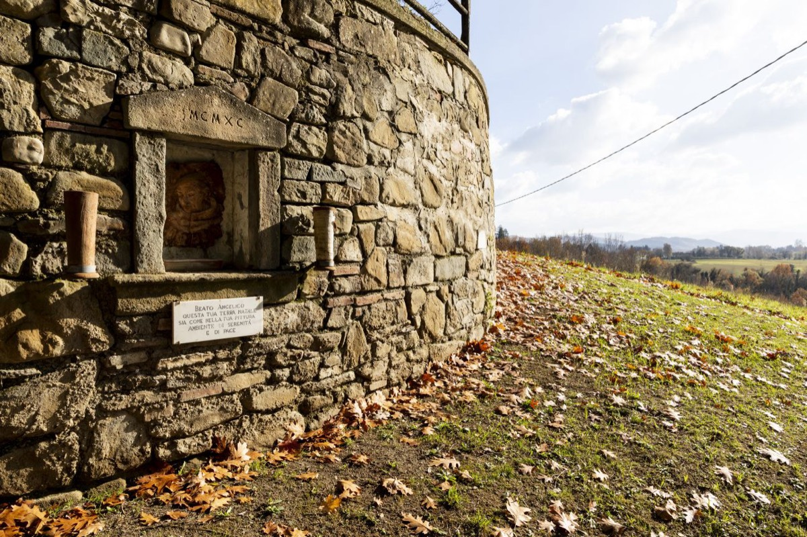

Percorso 6 · Religioso
I Pilastri della Fede
I grandi sacerdoti mugellani che in modo diverso hanno segnato la Chiesa e le nostre abitudini. L’abate del Buonsollazzo, Montesenario, Monsignor Della Casa, Monsignor Bartolucci, Don Milani
A PiediCon il Tuo Cane
A Piedi
- Durata
- 3/4 giorni
- Lunghezza
- 73 Km
- Difficoltà
- Difficile
- Dislivello
- 3030 Mt
Traccia (72,8 km)Partenza e arrivo
Porta il percorso con te
Scarica la traccia per il navigatore o per un'app come Komoot, OsmAnd o Wikiloc.
Sentieri e cammini attraversati
- Sentieri CAI
- nr. 30 - nr. 11 - nr. 11 B - nr. 00 - nr. 4
- Cammini
- SOFT 17 - SOFT 5 - Via Degli Dei
Descrizione del percorso
Leggi il racconto di Orme del Mugello
Il cammino inizia dalla Pieve di San Lorenzo nel comune di Borgo San Lorenzo (188 m). La Pieve, fondata nel 934, è un monumento storico e artistico del Mugello. L’attuale struttura, risalente al XII-XIII secolo, presenta uno stile romanico con una facciata semplice e un’abside semicircolare. Il caratteristico campanile in cotto, con pianta esagonale irregolare e cinque piani sovrapposti, ospita sei campane fuse nel 1826.
L’interno, suddiviso in tre navate, conserva opere d’arte di grande valore. Tra queste, un frammento attribuito a Giotto, unica opera del maestro ancora presente nel Mugello, e una Croce dipinta di scuola fiorentina del XIV secolo, probabilmente di Lorenzo Monaco. La chiesa ospita anche dipinti di Cesare Velli, Jacopo Vignali, Niccolò di Pietro Gerini e Matteo Rosselli, oltre alla Madonna col Bambino e i Santi di Piero di Cosimo.
Un’opera leggendaria è il busto di San Lorenzo, attribuito a Donatello, trafugato nel XIX secolo e sostituito con una copia. La Pieve di San Lorenzo rappresenta un importante patrimonio di fede e arte, con un legame profondo tra storia, spiritualità e cultura, testimoniato dalle sue architetture e dai capolavori che conserva.
Attraversato il centro storico e successivamente piazza Dante, ci guadagniamo l’uscita del paese. Proseguendo su via Trento, dopo pochi chilometri si giunge alla Chiesa di San Giovanni Maggiore. La chiesa è uno dei più affascinanti esempi di architettura medievale della regione, con una storia che risale al XII secolo. Dedicata a San Giovanni Battista, patrono di Firenze, la chiesa conserva importanti opere d'arte, tra cui dipinti e affreschi che raccontano episodi della vita del santo.
La struttura romanica e le cappelle laterali, riccamente decorate, creano un’atmosfera di spiritualità. Il campanile longobardo, con la sua base massiccia e ottagonale, presenta una forma difensiva, suggerendo un possibile ruolo strategico oltre a quello religioso. Unico nel suo genere, il campanile testimonia l'influenza longobarda nell'architettura locale. Questa chiesa, con il suo carattere fortificato e la ricchezza artistica, rappresenta un prezioso patrimonio culturale del Mugello, da preservare e apprezzare per le future generazioni.
Si supera in successione la frazione di Panicaglia, Salto e il Poggio di Ronta, fino ad arrivare a Pulicciano, dove è presente la Chiesa di Santa Maria.
Questo edificio ecclesiastico situato su un colle panoramico, ha origini medievali ed è legato alla storia della Repubblica Fiorentina. Un tempo parte di una rocca strategica, il suo nome originale era Santa Maria in Castello. Il sito fu teatro di scontri tra guelfi e ghibellini, tra cui la battaglia del 1303, in cui partecipò anche Dante Alighieri. Una targa del 1921 ricorda questo episodio storico. L’attuale struttura è frutto di interventi nei secoli, tra cui il restauro ottocentesco del priore Materassi. La facciata presenta un portale in pietra serena del 1898 e una lunetta in maiolica di Galileo Chini. L’interno, con una navata unica e copertura a capriate lignee, ospita opere d’arte seicentesche di Giovanni Balducci, Orazio Fidani e della scuola fiorentina. Tra i tesori della chiesa spicca il gruppo in terracotta policroma del Compianto su Cristo morto, attribuito alla bottega di Benedetto Buglioni. Il presbiterio custodisce una pala d’altare della cerchia di Santi di Tito. Nelle vicinanze, l’oratorio della Compagnia conserva un affresco di Mariotto Albertinelli, arricchendo ulteriormente il patrimonio artistico del complesso religioso.
Proseguendo il percorso si arriva al Santuario della Madonna dei Tre Fiumi (410 m).
Questo luogo di profonda spiritualità, è noto per miracoli e leggende. Le sue origini risalgono all’854 d.C., quando un convento dedicato a Santa Maria sorgeva nella zona. Il santuario si trova alla confluenza di tre corsi d’acqua e nelle vicinanze si trovano grotte un tempo teatro di visioni mistiche. L’attuale edificio, risalente al 1705, ha tre navate e custodisce opere di pregio, tra cui un affresco di Jacopo Chimenti detto l’Empoli. Un porticato del 1633 accoglieva i pellegrini, ma venne parzialmente compromesso nel 1780. Il culto nacque nel 1579, in seguito a un presunto miracolo avvenuto davanti a un tabernacolo mariano. La crescente devozione portò alla costruzione dell’oratorio, ampliato nei secoli. Nel XVIII secolo, il santuario divenne un importante centro di pellegrinaggio, con numerosi eventi straordinari, come la miracolosa sopravvivenza di un giovane caduto da un burrone. Il Cardinale Silvano Piovanelli, originario di Ronta, nutriva un forte legame con questo luogo, attribuendogli l’origine della sua vocazione religiosa. Anche da Arcivescovo di Firenze, tornava spesso a pregare nel santuario e a visitare le tombe dei suoi genitori.
Si continua seguendo il percorso che porta a Mucciano. Oltrepassiamo Villa Della Casa, nota per essere il luogo natale di Monsignor Giovanni della Casa (1503-1556), autore del celebre Galateo e arriviamo alla Chiesa di San Michele a Montefloscoli, un piccolo scrigno di storia e spiritualità, legato profondamente alla comunità locale e a figure di spicco della musica sacra, come Domenico Bartolucci, celebre direttore della Cappella Sistina e compositore rinomato. Le sue origini risalgono al Medioevo, in un periodo in cui la zona era abitata da comunità contadine. Il nome Montefloscoli potrebbe derivare dal latino mons flosculorum, ossia “monte dei piccoli fiori”, evocando la rigogliosa vegetazione del territorio. Nel tempo, la chiesa ha subito restauri e modifiche, ma ha sempre conservato la sua importanza come punto di riferimento religioso. La facciata è semplice e armoniosa, mentre l’interno riflette lo stile sobrio dell’arte sacra toscana. Montefloscoli è legata alla memoria di Bartolucci, maestro della polifonia e del canto gregoriano, che qui trovò ispirazione e rifugio. Nonostante la sua carriera in Vaticano, rimase sempre legato al Mugello, tornando spesso per dirigere la musica liturgica e stare tra la sua gente.
Da Montefloscoli il percorso è piacevole. Si attraversa la strada provinciale all’altezza di Mattagnano e dopo aver superato Rabatta, ci si immette nella pista Ecoturistica che costeggia il fiume Sieve. Il sentiero è ben segnalato e dopo pochi chilometri giunge prima a Ponte a Vicchio e successivamente a Vicchio, paese natale del Beato Angelico, dove è possibile visitare il paese con i suoi musei e i suoi edifici storici.
Si riprende la strada verso una delle mete più rinomate del Mugello, Barbiana (470 m).
Un piccolo borgo celebre per essere il luogo della rivoluzionaria esperienza educativa di Don Lorenzo Milani. La parrocchia di San Andrea, che ha origini medievali, era un modesto punto di riferimento per la comunità rurale locale fino all’arrivo di Don Milani nel 1954. Inizialmente mandato in questo luogo isolato come punizione, Don Milani trasformò la canonica in una scuola per ragazzi delle famiglie contadine, esclusi dal sistema scolastico tradizionale. La scuola era gratuita e aperta tutto l’anno, insegnando non solo materie accademiche ma anche il valore della parola come strumento di emancipazione. Il suo metodo educativo, basato su rigore e solidarietà, culminò nel libro "Lettera a una professoressa", che denunciava le ingiustizie scolastiche. Dopo la morte di Don Milani nel 1967, Barbiana è diventata un luogo di pellegrinaggio per chi lotta per una scuola più giusta e inclusiva. Oggi, la scuola di Barbiana è un museo e un centro di studio che continua a diffondere il suo pensiero, mantenendo vivo il messaggio di giustizia sociale e di impegno attivo che Don Milani ha lasciato.
Da Barbiana si sale verso la vetta di Monte Giovi (992 m). L’ascesa alla cima è caratterizzata dal passaggio in luoghi simbolo della Resistenza Toscana. Oggi, il ricordo di quei giorni eroici è mantenuto vivo attraverso la Piramide dei Partigiani, un monumento che si trova sulla vetta e che in aprile diventa il centro di commemorazioni e camminate della memoria.
Si raggiungono le rovine del Castello di Monterotondo che si ergono in una posizione panoramica che sovrasta la piana di Borgo San Lorenzo e la valle della Sieve, proprio dove il fiume si avvicina all’Arno. La scelta di questo luogo non fu casuale: in epoca medievale, la fortezza aveva una funzione strategica, servendo come punto di osservazione e difesa. Da qui, era possibile controllare un’ampia area circostante e mantenere il collegamento con altre postazioni militari della regione, come Monte di Croce e Galiga.
Entriamo nel territorio del comune di Vaglia. Immersa tra le colline che separano le valli del Mugnone e della Sieve, si trova la Croce dei Sette Santi, un luogo ricco di spiritualità e storia. Oltre al suo valore religioso, segna il confine tra due bacini idrografici ed è stato per secoli un punto di riferimento per viandanti e pellegrini. Secondo la tradizione, i Sette Santi Fondatori dell’Ordine dei Servi di Maria si fermarono qui il 31 maggio 1234, prima di ritirarsi sul Monte Senario. La croce si trova lungo la Via degli Dei, il percorso che collega Bologna a Firenze.
la fondazione di Montesenario
Uno degli aneddoti più affascinanti riguarda la fondazione dell’eremo da parte dei Sette Santi Fondatori dell’Ordine dei Servi di Maria nel XIII secolo. Si racconta che questi sette nobili fiorentini, desiderosi di una vita di preghiera e contemplazione, salirono sul monte per dedicarsi a Dio in totale isolamento. Una notte, mentre cercavano un segno per scegliere il luogo esatto dove costruire il santuario, apparve loro una luce misteriosa che indicava la posizione perfetta. Interpretandola come un segno divino, decisero di stabilirsi proprio lì, dando vita a uno dei più importanti luoghi di culto della Toscana
Siamo ormai in prossimità di Montesenario. Arroccato su uno dei rilievi più suggestivi del Mugello, il Santuario di Montesenario è un luogo di grande spiritualità e storia. Fondato nel XIII secolo dai Sette Santi Fondatori dell’Ordine dei Servi di Maria, rappresenta un importante centro di culto e cultura. Il nome Montesenario deriva dal latino Mons Senarius, riferendosi ai sei monti che lo circondano, sebbene la tradizione lo colleghi ai sette nobili fiorentini che qui si ritirarono nel 1233 per condurre una vita di preghiera e penitenza. La prima chiesa venne costruita nel 1250, e nei secoli il santuario fu ampliato, diventando un simbolo della spiritualità mariana in Toscana. All’interno si trovano opere d’arte di pregio, come la Cappella dei Sette Santi Fondatori, con le loro reliquie, affreschi di scuola fiorentina e un crocifisso ligneo del XIV secolo. Il santuario ha accolto nei secoli pellegrini, ecclesiastici e studiosi, diventando un punto di riferimento religioso e culturale. Oltre alla sua rilevanza religiosa, Montesenario è noto per la tradizione erboristica dei frati Serviti, che producono liquori e rimedi naturali come la celebre Gemma di Abete, ottenuta dalla macerazione delle gemme di abete. Il santuario, immerso tra boschi secolari e panorami mozzafiato, continua a offrire ai visitatori un’esperienza unica di raccoglimento, storia e contatto con la natura.
Proseguendo sempre sulla Via Degli Dei, si inizia la discesa che porterà a valle. Lungo il percorso è possibile ammirare la Badia del Buonsollazzo, un antico monastero ricco di storia e spiritualità. Fondata nell'XI secolo dai monaci benedettini, deve il suo nome al latino “bonus solacium”, ovvero “buon conforto”, per la pace che offriva a monaci e pellegrini. Nei secoli successivi divenne un centro di cultura e preghiera, ospitando nobili fiorentini e personaggi illustri come San Giovanni Gualberto e Lorenzo Corsini, futuro Papa Clemente XII. Durante il Rinascimento fu rifugio per artisti e letterati, ma dal XVIII secolo iniziò il declino, fino alla chiusura nell'Ottocento. Si racconta che il fantasma di un abate severo vaghi ancora tra le rovine. Oggi, sebbene in stato di abbandono, la badia conserva un’aura di mistero e fascino, richiamando visitatori affascinati dalla sua storia e dalle leggende che la circondano.
Si abbandona la Via Degli Dei e si prosegue su sentieri tracciati. Dopo qualche chilometro tra dolci declivi, facciamo ingresso a Borgo San Lorenzo, meta ultima del cammino.
Dormire, mangiare e prodotti lungo il percorso
Strutture ricettive (58)
- Affittacamere Via Degli Dei contatti
- Agriturismo Poggio Bartoli contatti
- Alla Corte Di Carla contatti
- Area Di Sosta Vecchio Ponte contatti
- BeB AURA contatti
- BeB CIRCUIT contatti
- BeB IL PITTORE contatti
- BeB IL PODERE DELLA PIAZZA contatti
- BeB LA CASA DI COSIMO contatti
- BeB LA CASA FUORI PORTA contatti
- BeB LA PIEVE contatti
- BeB LE DUE VOLPI contatti
- BeB VACANZE IN MUGELLO contatti
- Borgo! Hospitality contatti
- Camping Village Mugello Verde contatti
- Casa Torta contatti
- Casale San Giorgio contatti
- Castello Del Monsignore contatti
- Fattoria La Topaia contatti
- Hotel Ebe contatti
- Hotel La Rosa contatti
- Hotel Marrani contatti
- I Castagni Dei Medici contatti
- I Suoni Del Bosco contatti
- Il Borghetto contatti
- Il Borgo Di Elisa contatti
- Il Gallo Birichino contatti
- Il Muretto contatti
- Il Nido di Gabbiano BeB contatti
- Il Podere Di Tullio contatti
- Il Poggio Alle Ville contatti
- Il Villino contatti
- La Colombaia contatti
- La Corte Di Ronzano contatti
- La Fattoria Del Farneto contatti
- La Felicina contatti
- La Terrazza contatti
- Locanda Degli Artisti contatti
- Locanda Di Alberi contatti
- MONSIGNOR DELLA CASA COUNTRY RESORT eSPA contatti
- Mugello Vacanze contatti
- My Home contatti
- Podere Capitignano contatti
- Podere Moiata-Fattoria Di Campestri contatti
- Podere Ugolini contatti
- Poggio A Sieve contatti
- Poggio Savelli contatti
- Residences E Appartamenti- Villa Torricelli Il Giardinetto contatti
- Short Term Rental In Borgo San Lorenzo contatti
- Short Term Rental In Scarperia E San Piero contatti
- Short Term Rental In Vicchio contatti
- Sommavilla contatti
- Tre Fiumi contatti
- Villa Campestri contatti
- Villa Cerreto contatti
- Villa Dalia contatti
- Villa Di Pilarciano contatti
- Villa La Commenda Concordia contatti
Aziende (12)
- Azienda Agricola Palazzo Vecchio contatti
- Azienda Agricola Poggio dei Roti contatti
- B.beb La Casa di Cosimo
- Banco Fiorentino - Filiale di Borgo San Lorenzo
- Banco Fiorentino - Filiale di Luco di Mugello
- Banco Fiorentino - Filiale di Scarperia
- Banco Fiorentino - Filiale di Vicchio
- Il Poggio alle ville di Raffaele Edlmann contatti
- Marchisoro Farm
- Monsignor della Casa Country Resort e Spa
- Poggio a Sieve - Casa Vacanze
- Società agricola Bacciotti s.s. di Sandra e Roberto Mongili contatti
Il nome della struttura porta al suo sito web; "contatti" apre la scheda con telefono e mail sul portale turistico Mugello Toscana (per chi non ha un sito c'è solo quella). Le aziende portano ai loro siti. Sono tutte segnate anche sulla mappa.
Percorso, traccia e testi di Orme del Mugello, pubblicati con il loro permesso.